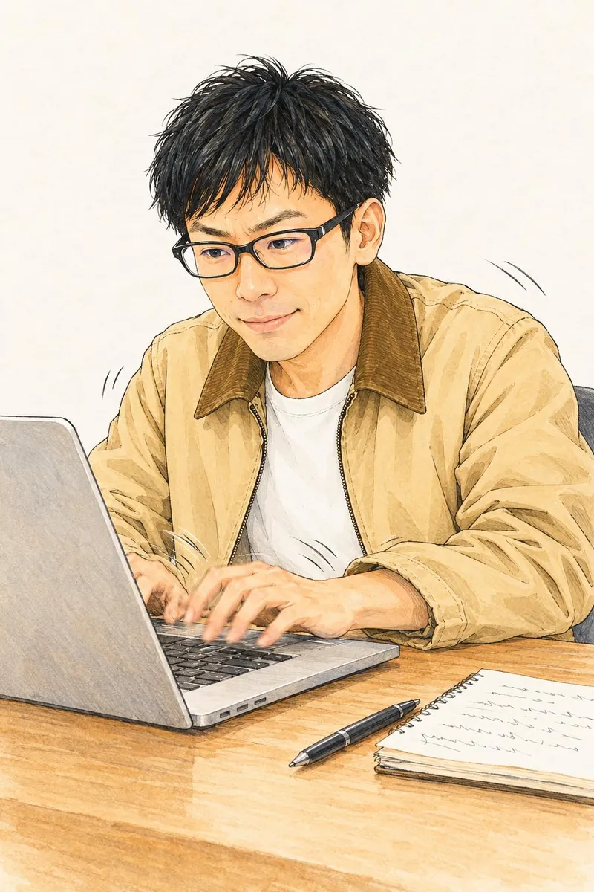

ヤフコメ275件
『サマーウォーズ』汗だくのラスト8分間を考察。なぜ健二は小惑星探査機の直撃を阻止できたのか？おもしろくてタメになる
知的エンタメ記事を執筆します。
映画・マンガ・ドラマ・数字を、細かく観察して書きます。
Quick Japan Web・ねとらぼ・マグミクスに寄稿し、ヤフコメ275件を集めた記事もあります。
執筆のご依頼は、編集者・Web担当者の方からお受けします。

実績
商業媒体では、旧名義「ツヤマユウスケ」で執筆しています。
商業媒体で書いた記事
ヤフコメ209件
考察『紅の豚』ポルコはなぜ秘密警察に命を狙われているのか？ヤフコメ169件
映画「シン・仮面ライダー」レビュー ライダーに変身したくない本郷猛と、エヴァに乗りたくない碇シンジヤフコメ105件
『閃光のハサウェイ』の宇宙作戦は『エヴァ』を超えるか？ 注目の「空中受領」シーンヤフコメの件数は、Yahoo!ニュースに転載された当時の数です。リンク先は、掲載元サイトの記事です。
noteで書いたマガジン
note累計600スキ突破
虚構と現実の交差点――エンタメから読み解く社会とニュースnote累計900スキ突破
御社の決算書を見せてください｜ブラック企業を回避する会計戦略取材記事
プロフィール
TSUYU(津山雄輔)です。
「細かすぎる」エンタメ研究所の所長として、作品の細部を観察し、そこから社会や数字へ話をつなげる文章を書いています。
めざしているのは、おもしろくてタメになる「知的エンタメ」です。
現在は、noteでエッセイと連載小説を書いています。
ライターとは別に、合同会社リベルダードの代表として、AIを組み込んだWebアプリの開発も手がけています。
書くときの3つの姿勢
- 物語を、細かく見る細かすぎるほど観察して、見過ごされてきた違いを拾います。
- 遠くまでつなぐ作品の話を、社会や数字の話にまでつなげます。
- 楽しく届ける読み終えたとき、おもしろくて、少しタメになる文章にします。
書くこと
映画監督や俳優の作品を、通して観て読み解きます。
マンガ人気作を、構成や描写の細部から読みます。
ドラマ脚本や演出の工夫を、細かく拾います。
働き方壊れた働き方を、再設計する視点で書きます。